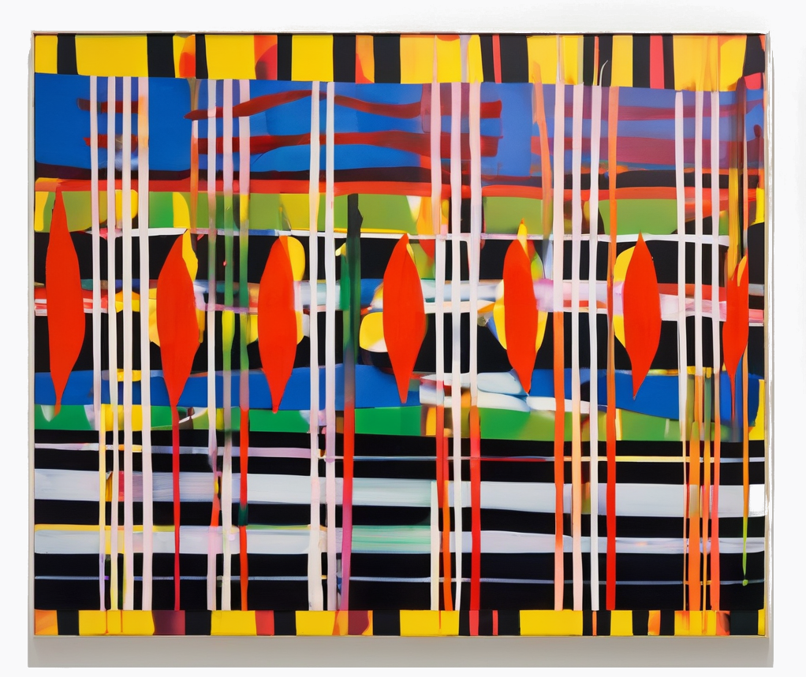

I like to design tools and platforms to create art and build community.

Skills
Technical Skills:
Build, test, and deploy generative AI models using PyTorch and Huggingface.
Construct client-centered web user interfaces.
Administer cloud-based infrastrcutre on AWS.
Maintain company server infrastructure.
Leadership and Management:
Manage and train a team of designers and developers.
Lead cross-functional project teams through complete product lifecycles.
Programming and Scripting:
Four years of experience with Python coding for data analysis and automation.
Proficient in Linux systems and shell scripting.
Analyze data with pandas and visualization using matplotlib.
View my work:
Please visit my twitter to see work I've done.
Effectively Accelerating Art and Design with Artifical Intelligence
As an innovator at the intersection of art and technology, I bring over fifteen years of experience to the table. My journey has been marked by the successful launch of multiple art and music venues, and I have honed my expertise as a lead colorist in a premier sign fabrication studio. My latest venture, P.E.O.P.L.E., stands at the forefront of generative AI, offering artists revolutionary tools to amplify their creative expression. I am committed to making cutting-edge AI advancements accessible to all, fostering a thriving and vibrant future.
Experience
Cofounder @ P.E.O.P.L.E.
At P.E.O.P.L.E., we serve as a vital link between the evolving technology of generative
AI and the personal touch of artistic creation. As one of the founders, I take on a
central role in shaping the direction of our software design and technical operations.
I'm responsible for developing the foundational tools that enable AI to assist in
artistic endeavors. My work involves close collaboration with artists to understand
their vision and requirements, ensuring their concepts are transformed into custom AI
models. My position as the main point of contact for our clients allows me to guide
them through the process of integrating their unique data with our AI systems, paving
the way for innovative art generation.
Lead Colorist @ Winsor Fireform
At Winsor Fireform, a leader in producing high-quality porcelain enamel signage and graphics, I worked as the Lead Colorist. My main responsibility involved developing the inks used in our sign production. Our clients ranged from local governments and businesses to individual artists, and for each, getting the colors right was crucial for bringing their visions to life. In my role, I focused on creating custom color formulas to precisely match what our clients envisioned. Working alongside the manufacturing team, we consistently produced beautiful, top-quality signs that our clients were proud of.
Cofounder @ Gary's Place
Gary's Place, was an artist-run gallery in Chicago. We focused on creating a unique platform for artists to explore and push the boundaries of art. Unlike traditional galleries, Gary's Place was known for embracing works that were often considered too unconventional or avant-garde for the mainstream art scene. We celebrated the bizarre, the beautiful, and the uncanny, encouraging artists to experiment boldly. As a co-founder, I was deeply involved in the gallery's operations, collaborating closely with artists to plan and design their shows. My responsibilities included scheduling exhibitions and spearheading marketing efforts to promote these innovative and often provocative showcases. Our commitment at Gary's Place was to provide a haven for artistic exploration and to challenge the conventional perceptions of art.
Cofounder @ BRCM
BRCM was an underground music venue in Philadelphia. Specializing in metal, noise, and avant-garde music, BRCM became a hub for genres that often flew under the mainstream radar. As a co-founder of BRCM, I was instrumental in the venue's day-to-day management and growth. My responsibilities encompassed a wide range of tasks, crucial among them being the management of our social media marketing. This role was key to building our reputation and attracting both performers and audiences. Additionally, I was heavily involved in booking artists, ensuring a diverse and dynamic lineup that kept our regulars coming back and drew in new faces. Overseeing routine operations of the facility, I ensured that every night at BRCM was not just a concert but an experience.